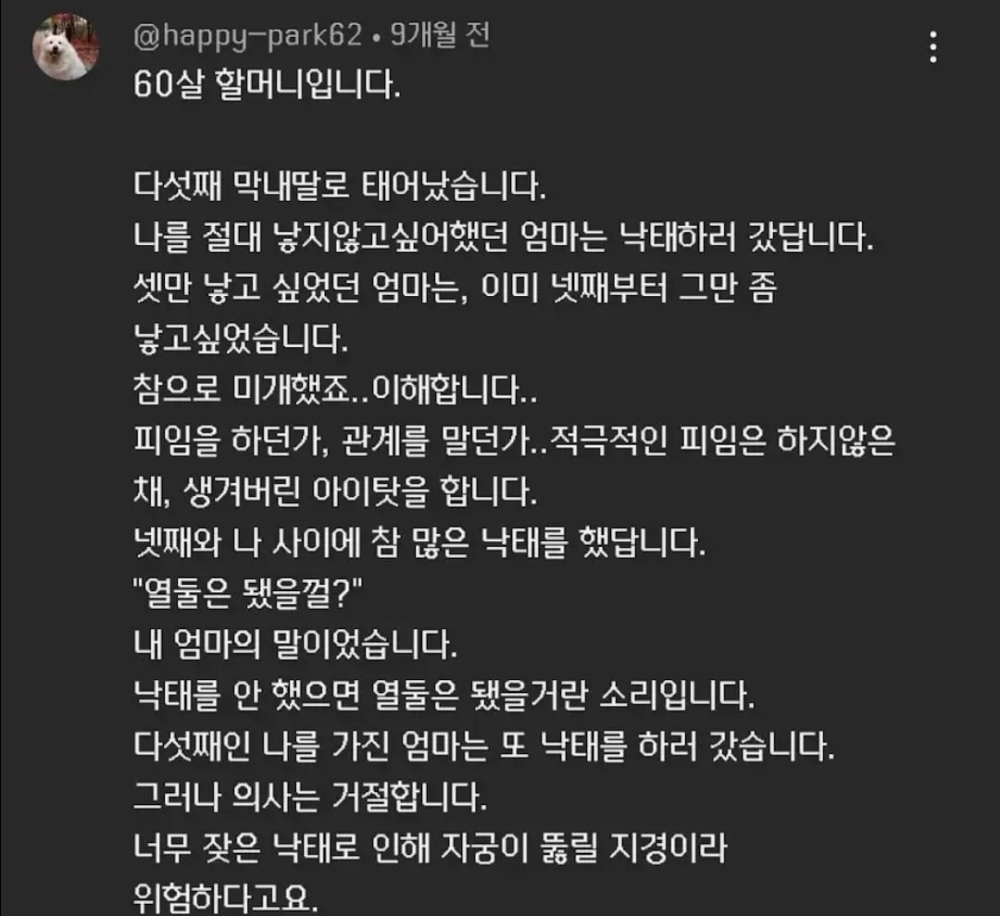
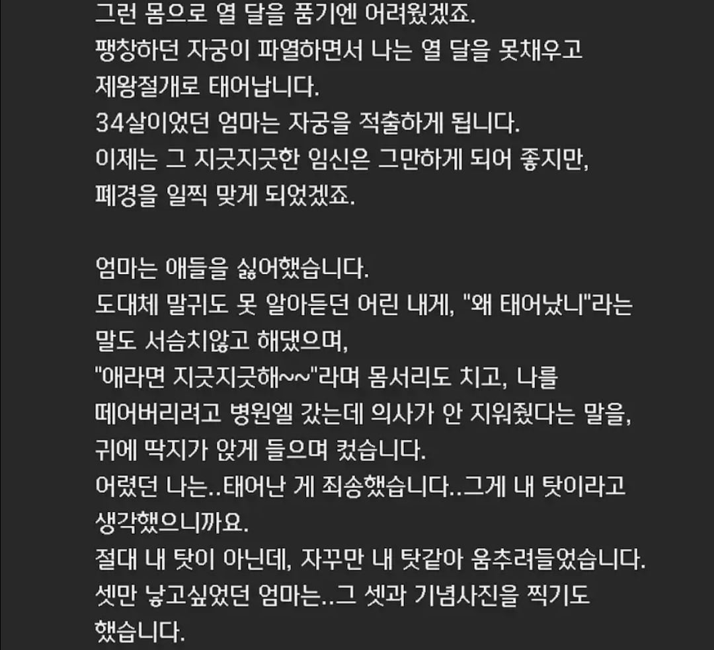
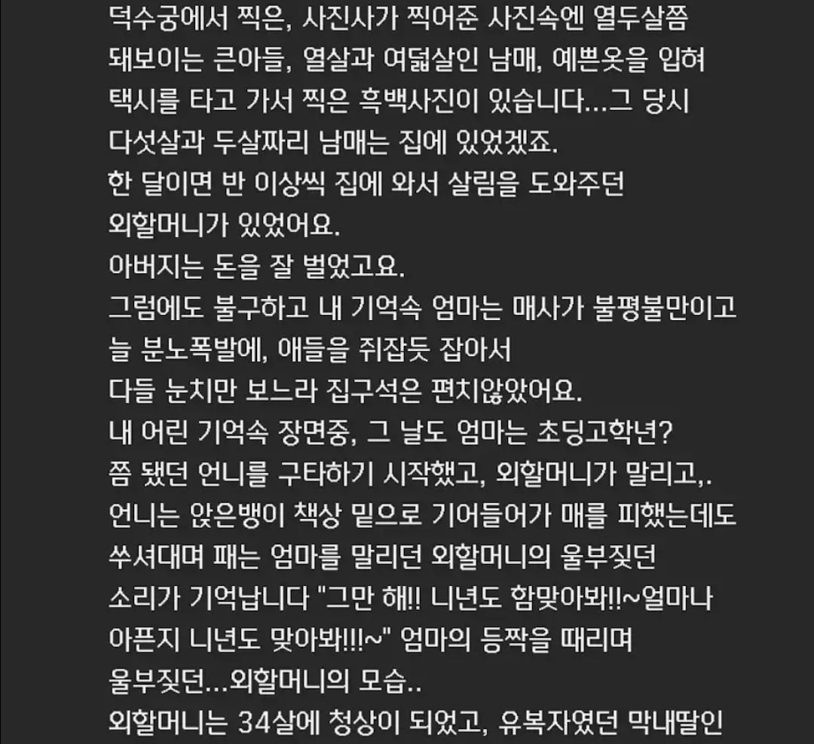
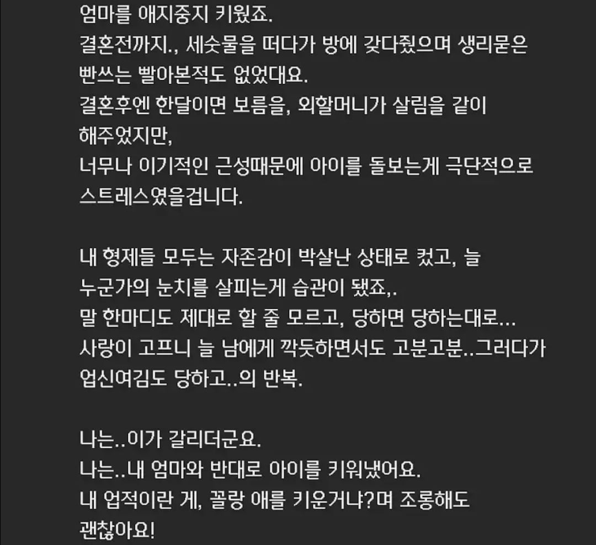
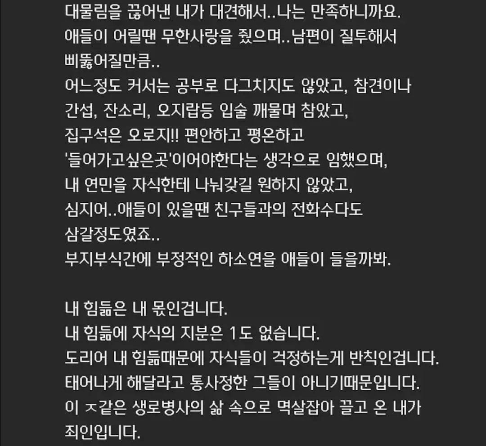
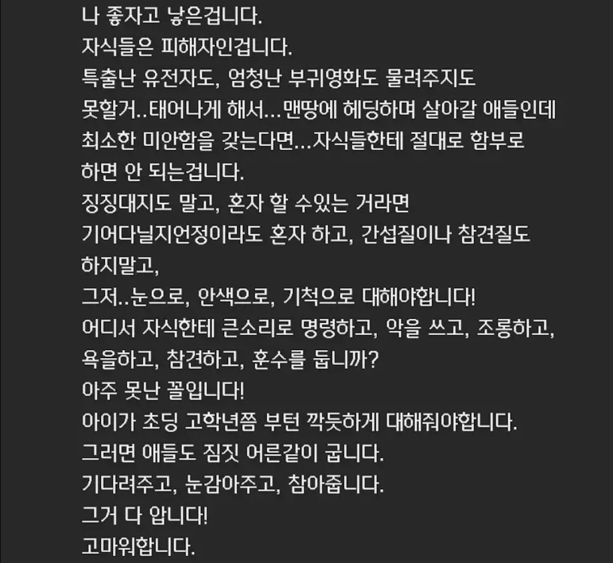
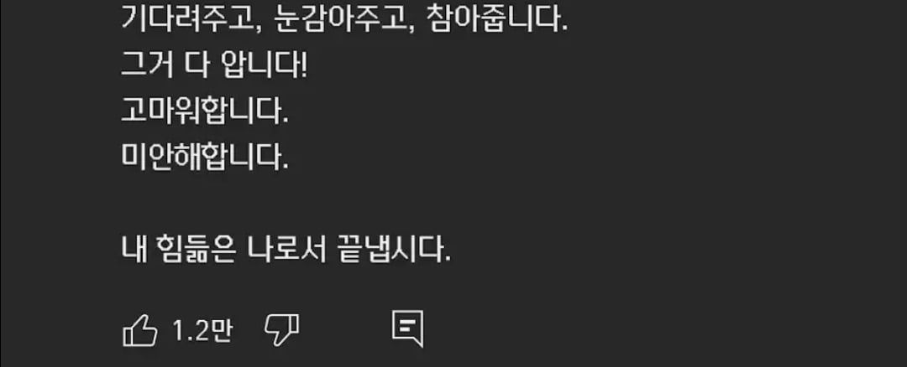

<엄마의 양육방식이 딸에게 미치는 대물림>에
대해 연구한 다큐멘터리 영상에
한 어머니가 다신 댓글이다.







<엄마의 양육방식이 딸에게 미치는 대물림>에
대해 연구한 다큐멘터리 영상에
한 어머니가 다신 댓글이다.
진짜 강하시다.... 저거 생각보다 엄청 가지기 힘든 마음가짐일거여
진짜 힘드셨겠다...
지금은 극단적인 여성친화 사회지만...
와.....
정작 실제로 피해받고 자란분들은 여성의 권리니 뭐니 그딴건 관심도 없고 그저 자기 자식을 위하는데
오직 가상으로만 피해를 망상하는 미친년들이 과실을 따먹는 병신같은나라
브라보 코리아
우리 엄마 나한테 정말 잘해주시지만 딱한번 너는 계획에 없던 둘째라고 했을때 한동안 ㅈㄴ 우울했었는데 그런걸 평생들었다니 ㅡㅜ
저 60살 할머니는 모친상때 어떤 스탠스를 취할지 궁금하네
정말 위대한 어머니시다
저분만큼 상처를 받으며 산건 아니지만 맞으면서 이렇게 쓸모도 없을 거면 왜 태어낫냐하고 맞으면서 자라서 부모한테 원망도 미움도 많았고 복수도 하고싶었는데.. 솔직히 말하면 아직도 그러고싶음. 하지만 그게 대물림 되지않도록 할려구 애한테는 할머니할아버지가 좋은 사람으로 기억되도록 노력할거임
숭고하시다. 악업을 본인 차례에 끊어내는거 헤아리지도 못하겠음.
60살 여자가 누가 ㅈ같은 이란 표현을 쓰나. 애정결핍이라고 생각하는 어린 놈이 쓴거 같은데.
60살 할머니가 ㅈ같은 이라는 말을 씀?ㅋㅋㅋㅋㅋㅋㅋ
낳음 당했다도 아니고 무슨 자식이 피해자야..
그리고 무슨 애를 훈수도 두면 안되고 상전처럼 키워
너무 요새 페미스러운 내용인데..
ㅋㅋㅋ 어이가 없네 여자는 태어나지 못했다면 남자는 태어나서 그냥 소모품으로 썼음 왜 남자를 원했냐고? 소모품이 필요했기 때문임
60살 할머니의 어머니 때에는 낙태가 어려웠고 낙태를 12번을 못한다.. 60살들은 초딩이라는 말을 안쓰고 여전히 “국민학교”라는 말을 주로 쓰며 “1도”라는 유행어도 안쓴다
저렇게 맞춤법 맞춰가며 띄어쓰기도 잘 못하는 분들이 대부분이며 타자로 저렇게 장문을 치는게 힘들다..
글쓴이는 3~40대 정도로 추정되며 관심을 받기 위해 댓글을 썼을거라 본다.
내친구도 늦둥인데 엄마가 애가진걸 늦게알고 낙태약 먹었다니까
생기기전에 먹었어야지 했다던데 (아빠 나이 53세에 태어남)
글에서 많은 고뇌와 인내가 보인다…
어른이네요